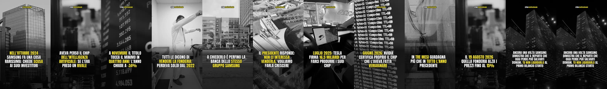
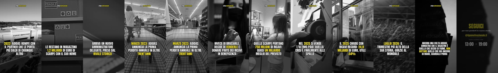
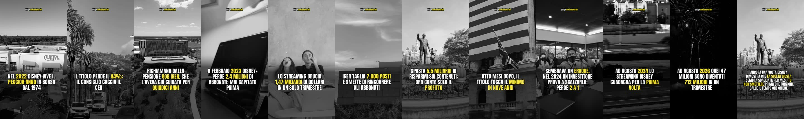
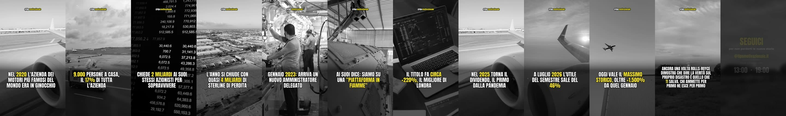
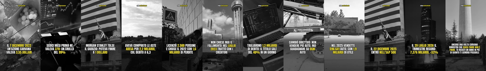
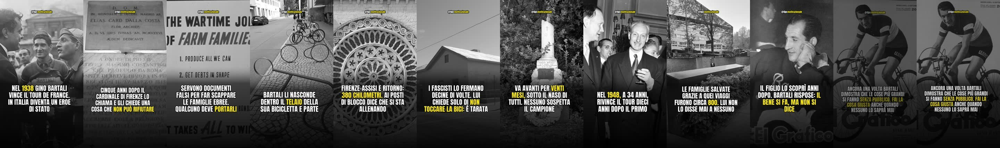
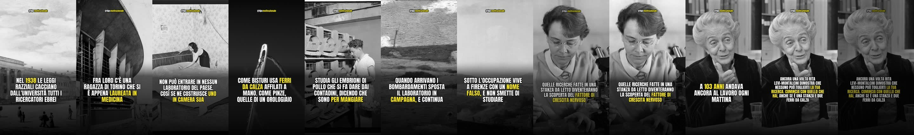
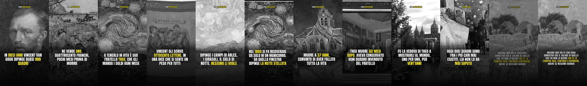
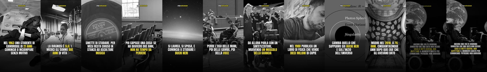
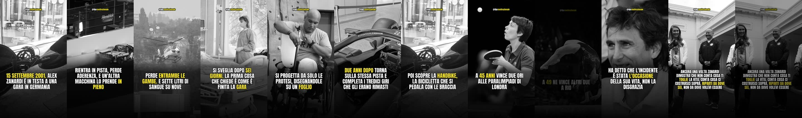

19:00
storia vera
Samsung — reparto scomodo
L'8 ottobre 2024 Samsung pubblica delle scuse formali ai suoi investitori: il capo della divisione chip
TIPSMOTIVAZIONALE
15 reel in coda · fino a martedi 1 settembre 13:00 · due al giorno, alle 13:00 e alle 19:00
oggi

Samsung — reparto scomodo
L'8 ottobre 2024 Samsung pubblica delle scuse formali ai suoi investitori: il capo della divisione chip
domani

Bartali — il bene non si dice
Nel 1938 Gino Bartali vince il Tour de France e in Italia diventa un simbolo.

Adidas — un miliardo
Nel 2022 Adidas rompe pubblicamente con il rapper con cui aveva firmato la collaborazione più redditizia
mercoledi 26 agosto

Van — gogh un quadro venduto
In dieci anni Vincent van Gogh dipinse quasi novecento quadri. In vita ne vendette praticamente uno

Disney — quattro anni
Nel 2022 Disney vive il peggior anno in borsa dal 1974: il titolo perde il 44%.
giovedi 27 agosto
Boeing — un bullone
Il 5 gennaio 2024 un pannello si stacca da un Boeing Alaska Airlines a 16mila piedi.
Ge — spezzata in tre
Nel 2000 la General Electric è l'azienda più preziosa del pianeta: quasi 600 miliardi di dollari,
venerdi 28 agosto

Rolls — royce in fiamme
Il 20 maggio 2020 Rolls-Royce taglia 9.000 posti di lavoro, il 17% di tutta l'azienda. Il

Carvana — tre dollari
Il 7 dicembre 2022 un'azione Carvana toccò 3,55 dollari. Sedici mesi prima ne valeva 370: un
sabato 29 agosto

Bartali — il bene
Nel 1938 Gino Bartali vince il Tour de France e in Italia diventa un simbolo.

Levi — montalcini stanza
Nel 1938 le leggi razziali cacciano dalle università italiane tutti i docenti e i ricercatori ebrei.
domenica 30 agosto

Van — gogh un quadro
In dieci anni Vincent van Gogh dipinge quasi novecento quadri. In vita ne vende praticamente uno
Beethoven — la nona
A ventotto anni Ludwig van Beethoven è il pianista più richiesto di Vienna. Ed è proprio
lunedi 31 agosto

Hawking — due anni
Nel 1963 uno studente di Cambridge di ventun anni comincia a inciampare senza motivo. La diagnosi

Zanardi — quattro ori
Il 15 settembre 2001, sul circuito del Lausitzring, Alex Zanardi è in testa alla gara. Rientra
Dopo l'ultimo la coda è finita. Il lavoro notturno ne produce quattro ogni notte, quindi non dovrebbe succedere — ma se il Mac resta spento più giorni ricevi un avviso quando ne restano due.